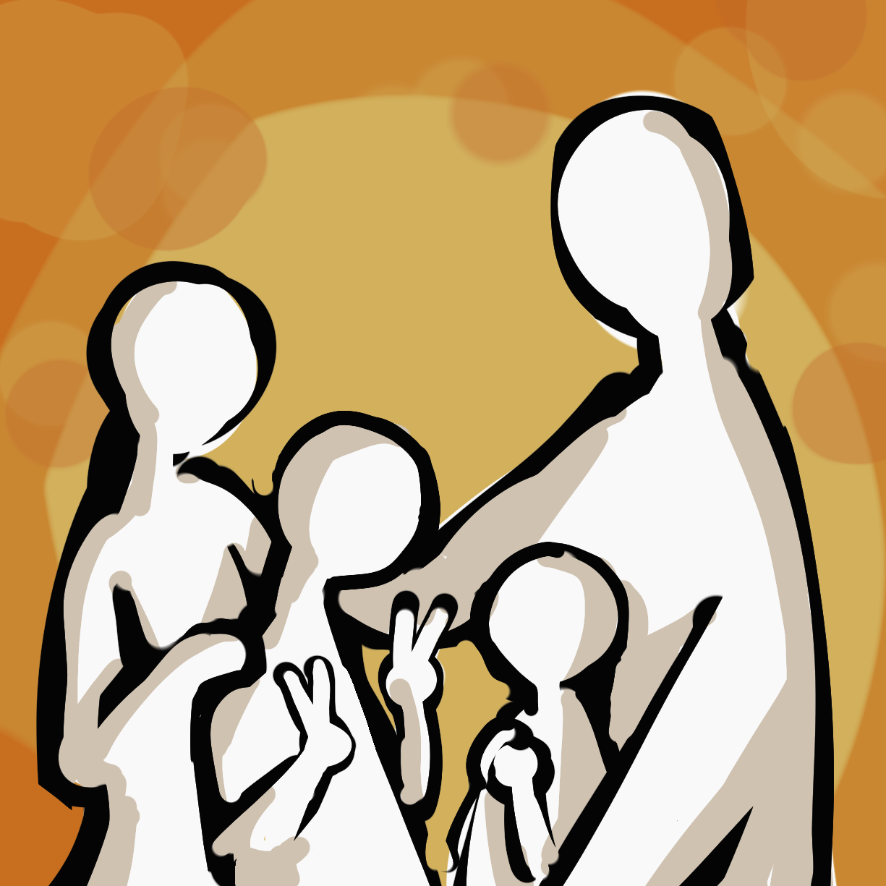

TRPGってなぁに？？？
TRPGは、登場人物の1人になってとある物語を完成させることができる遊びです
KP(進行役)とPL(参加者)に分かれて行うゲームで、
PLがPC(プレイヤーキャラクター、探索者)を動かして物語を攻略していくことができます
自分のやりたいことが(ある程度)自由に選択できる！
サイコロの出た目によって結末が変わることもある！
人生ゲームみたい！
これは個人の主観に基づくものです
どんなのがあるんや？？？
-
クトゥルフ神話
TRPG -

ダブルクロス
-

シノビガミ
-

インセイン
-

エモクロア
これはあくまでも一部であって
他にもいろいろなシステムがあるよ！！
そのシステムごとに特徴がある！！
最近、私がよく見かけているシステムはクトゥルフ神話TRPG
有名な"SAN値チェック"ってのもこれにでてくるよ
COCをよく見てる
COCシナリオの系統
クローズド
いわゆる"白い部屋"ってやつ
脱出ゲームみたいで謎解きも多いよ
シティ
いろんな場所を探索できる
ゲーム機でやるRPGっぽくて自由度が高いよ

プレイヤー人数
-
1人で
-

2人で
-

3人以上で
それぞれの目標のために
時に対立しながら
時に協力しながら
物語を進めていくよ！！
みんなで楽しめたら勝ち！！
好きな配信！！！
タイトルクリックで
そのシナリオのネタバレ込みの
好きなところを語っています
-

それは、人間に似た奇妙な———だった
シナリオ作者：むつー 様
私がハマったきっかけ①
少し変わったクローズド系のシナリオになっていて、とても満足感のあるシナリオになっています。
徐々に開示されていく情報から考察していくのは楽しいし、配信を見ている時もPLの方々の考察を聞くのがとても楽しいです。
↓
↓
↓
——ここからネタバレを含みます——
このシナリオの1番のネタバレであり見所であるのは、すごくかっこいい"変身"が見れるところです。
いろいろなPLの方々がでている配信・動画のどれを見ても、 まるでニチアサのような展開にワクワクした声が漏れているの様子がとても楽しいです。
異星人との戦いはとても楽しそうで(これも上手く戦えるかはダイスの運次第ですが) 何回も見ても飽きることはありません。
さらに、2PLであるが故にこのシナリオをやる人それぞれに異なった関係性が作られるところも面白いところです。
多くの不安が残るまま、たくさん悩んで出したそれぞれの答えが本当に正しいのか、 最後の最後までハラハラが止まらないシナリオでした。
-

それは、人間に似た奇妙な———達だった
シナリオ作者：むつー 様
私がハマったきっかけ②
前作の壊胎とは世界観は同じになっています。
このシナリオの最大の特徴のひとつは探索者にとって"大切な人"がいるということです。 例えば過去の配信での"大切な人"には、兄弟姉妹、親、子供、恋人、親友などがいました。 大切な人と暮らす日常のあたたかさに心がおちつきます。
わりと序盤で物語はとんでもない展開を迎え、その後も目まぐるしく話が展開されていくので、 飽きることなく、それどころかずっとワクワクしながらこの物語を楽しむことができます。
↓
↓
↓
——ここからネタバレを含みます——
このシナリオも前作の壊胎と同様に、かっこいい"変身"が見られます。
しかし前作とあきらかに異なるのはその見た目。世界を守るために、大切な人との日常を守るために、 いわゆるダークヒーローとして敵に立ち向かって行きます。
私はこのシナリオが本当に大好きで,見るたびに心が苦しくなるのに見返すことがやめられないほど素晴らしい作品です。
また、この物語はかなりの長編なのですが、特にその後半部分には辛く苦しい地獄のような展開が続きます。
1番苦しいのは、"大切な人"に大きな危機が迫り来るところ。どのPLの方々も"大切な人"のために戦ってきた中で、この展開はとても辛そうに見えました。 そんな中、彼らがどう思うのか、どんな意思を持っているのかを聞くと、とても心にくるものがあります。
さらに、ラスボスとの戦いも、バケモノ級でもはや何が起こっているのかわからないレベルでただただ興奮する。どこまでもニチアサです。
この地獄の連続を乗り越えた先でむかえるエンディングは、どのPLの方々のものもすごく感動的で情緒がめちゃくちゃに壊されます。
感情のジェットコースターを味わえるとっても素敵なシナリオでした。
-

狂気の峰へ
シナリオ作者：まだら牛 様
私が1番最初に見たTRPGのセッション動画
『狂気の山脈にて』(H.P.ラブクラフト)という小説をもとに書かれたシナリオになっています。
この物語は、エベレストを遥かに超える標高の山が発見されたところから始まります。
参加した人ごとに、この登山チームの雰囲気もそれぞれ異なっていてとても良いものでした。
この作品が1番人生ゲームに似ているような気がしています。
山についての知識もたくさん知ることができるので勉強にもなって楽しいです。
↓
↓
↓
——ここからネタバレを含みます——
とにかく山に登ることがメインのシナリオだですが、前半は山に、後半は未知のものに恐ろしさを感じました。
世界最高峰の山を登っていくに連れて、仲間意識が上がっていく過程が見ていてとても微笑ましいです。
それと同時に、雪山の厳しさによって仲間を失うかもしれない恐怖も上がっていくのが恐ろしいところです。
特に垂直登攀(クライミング)が求められる場面に遭遇した時のPLの方々はとてつもない絶望感を覚えていたのだろうと思います。 数々の苦難を乗り越えた上で登頂成功したときには、計り知れないほどの感動が待っています。
しかし1番の難関は下山のときでした。登頂に成功したとしても生きて帰れなければ意味がないのです。 最後まであがき続ける彼らの行動はとても胸にくるものがあり、ついつい応援してしまいます。
(雪山)登山の楽しさ・恐ろしさがわかるシナリオで、面白さと緊張感と感動がこのシナリオ一つでお腹いっぱいになるほど味わえました。
また、つい最近、シナリオ作者のまだら牛さんが企画している『アニメ映画化プロジェクト』が動いています！
-

あなたたちは、
互いが互いのことを想い合う家族だシナリオ作者：さんとなな 様
とてもあたたかい家族のお話。
父、母、兄(もしくは姉)、弟(もしくは妹)の4人がそれぞれが秘密を抱えている状態で、秘匿ハンドアウトというものを持ってこの物語は進められていきます。
どのPLの方々の配信を見ても家族の会話がとてもほのぼのしていて、全体的に見ていて幸せな気持ちになれます。
↓
↓
↓
——ここからネタバレを含みます——
幸せな家族を取り巻く少しの違和感。そして、その原因を探していくうちに開示されていく情報から、 断片的にわかっていく真実はとても残酷なものでした。
特に、母親が、家族を危険なものから守るために、家族を愛しているが故に起こした行動がとても良かったです。
そして話し合いを経てさらに深まっていく家族の愛情は本当にあたたかくて、ただただ幸せになってほしいという思いが強くなります。
私が好きなシーンのひとつとして、最終場面直前にある、KPが"真実"を読み上げるところがあげられます。 初めてこのシナリオの配信を見たとき、真実を知ったときの衝撃と絶望、 そしてここでも感じる家族愛というのはとても大きいものでした。
どの配信を見ても、危険に立ち向かっていく家族はとても勇敢で優しすぎると思った。
全員生存率が低いシナリオなので、最後はずっと祈りながら見守ることしかできないことがとても苦しかったのですが、 その上でむかえるエンディングはどんなものでも素晴らしいものだったと思います。
-
目が覚めると病院にいた
シナリオ作者：ディズム 様
短いながらも満足感の大きいシナリオです。
これは、医者(KP)と探索者(PL)の1対1で行う対話がメインとなっています。 探索者は、目が覚めると病院にいた、という場面から始まります。 「あなたは雷に打たれた」と医者からは伝えられますが、それ以前の記憶は失われていた。
このあらすじだけ聞いていると少し不穏な感じがしますが、実際の配信を見るとコミカルな部分も多いので、かなり楽しんで見られると思います。
特に、作者であるディズムさんが演じる医者は、とても茶目っ気のある性格で会話も上手なのでとても会話というものに引き込まれます。
↓
↓
↓
——ここからネタバレを含みます——
この物語には、事故にあってしまった息子を救おうとする医者の話が深く関わっていきます。
何も知らない息子のために、数日会話をかわしただけの、他人である探索者ができることは限られています。 そんな中でPLの方々が、探索者が出した結論はただただ良すぎるとしか言えません。
このシナリオの好きなところは、 探索者が記憶喪失だという状態を通して、PL自身の考え方を知ることができるところです。 多くの人がこのシナリオを経験していますが、どの配信を見ても同じ考えの人はいません。 そして、その人らしい発言を聞くことでさらにその人自身のことも好きになれます。
また、これをもとに『カタシロリビルド』として舞台化もしました。
この舞台には、声優から芸人、YouTuber、アスリート、精神科医など多方面から参加していただいており、 それぞれ、とても豪華な配信がされていました。
-

ほら、その顔をよく見せてくれ
シナリオ作者：キリト 様
このシナリオの形式はクローズドになっており、クローズドらしく見知らぬ部屋で目が覚めるところから始まります。
また、この配信はとても大人数で豪華でした。
配信ではオープニング映像が制作されており、とってもかっこいい映像になっていました。 まずそこから興奮が止まりませんでした。
PLが4人ということに加え、配信ではKPの他にも3人のSKP(サブキーパー)が参加していたので、 かなりの大人数で物語を紡いでいくような形になっていました。
特に探索者が4人いるからか、とても面白い会話がぽんぽん出てくるので、聞いていてとても楽しいです。
↓
↓
↓
——ここからネタバレを含みます——
私が思うこのシナリオの見所のひとつは、たくさん出てくるNPCたちとの関係や会話です。 このシナリオにはたくさんのNPCが出てきますが、それぞれ複雑な過去や思いを持っており、 それぞれが自身の信じる道に突き進んでいました。
それゆえに起こってしまった今回の事件は、とても悲しくやるせない思いでいっぱいになりました。
とある1人のNPCが持っていた、人類のための野望はどこから狂ってしまったのか、想像しただけで切ない気持ちになります。 さらに、KPが演じるNPCの感情の噴出はとても興奮しました。
全てにおいて豪華すぎるこの配信は、どの場面を見ても常にワクワクする展開ばかりで本当に面白いシナリオでした。
たくさんありゅ！！